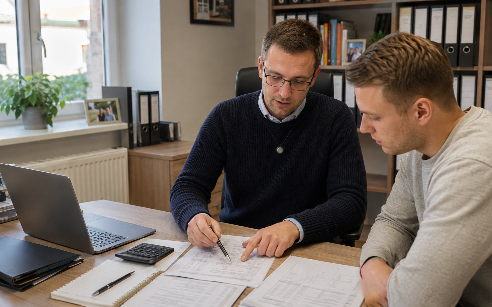
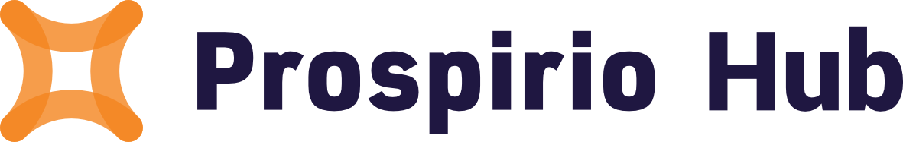

Finanční poradci
Při další schůzce máte po ruce klientovy cíle, priority i důvody jeho dřívějších rozhodnutí.
Zobrazit scénářRealitní makléři
Z prohlídky zůstane přesný obraz potřeb zájemce i důvodů, proč mu nemovitost nesedla.
Zobrazit scénář
Daňoví a účetní poradci
Snadno dohledáte předchozí doporučení, dohodnutý postup i podklady, které klient ještě nedodal.
Zobrazit scénář
Veterináři
Při další kontrole máte po ruce vývoj potíží, reakci na léčbu i postřehy majitele z domácí péče.
Zobrazit scénář
Lékaři a kliniky
Při další návštěvě navážete na dosavadní průběh obtíží i důvody zvoleného postupu.
Zobrazit scénářPsychologové a psychoterapeuti
Před dalším sezením si připomenete důležitá témata i změny, které se během terapie objevily.
Zobrazit scénář
Architekti a projektanti
U každé změny dohledáte původní zadání, důvod rozhodnutí i domluvu mezi účastníky projektu.
Zobrazit scénář
Autoservisy
Mechanik dostane přesný popis závady včetně situací, ve kterých se problém objevuje.
Zobrazit scénář
Díky přepisu schůzek a zpětné analýze vzrostla úspěšnost prodeje o 23 %
Prospirio Hub učí obchodníky prodávat lépe. Aby ale mohl poradit, potřebuje vědět, co se na schůzce doopravdy odehrálo. Omi zachytí celé jednání a pošle hotové výstupy rovnou do aplikace.
Další příklady přibývají
Pracujeme na případových studiích ze servisu, výroby a interních porad. Chcete být mezi nimi?